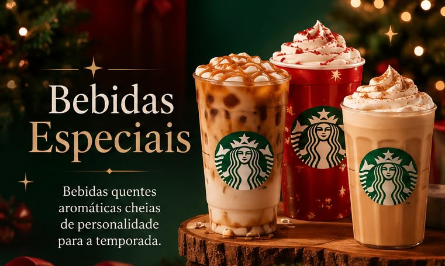

Bebidas especiais
Bebidas quentes, aromáticas e cheias de personalidade para a temporada.
The Magic of Christmas Starts Here
O Natal chegou ao Starbucks! Confira nossa coleção especial inspirada na magia desta época do ano, com sabores que celebram lembranças e momentos especiais.